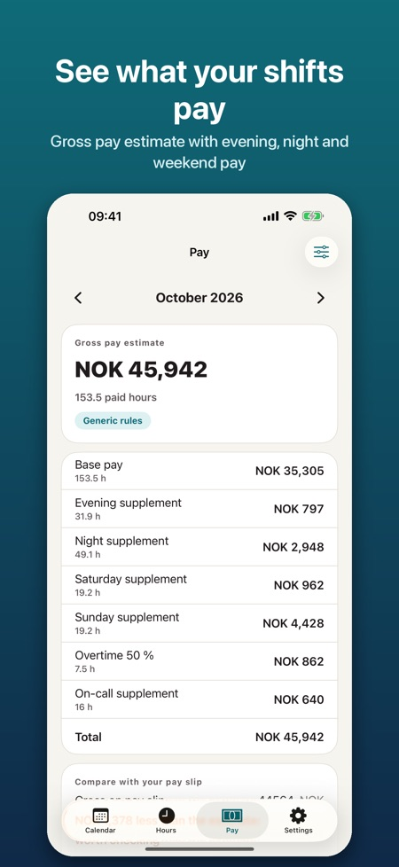
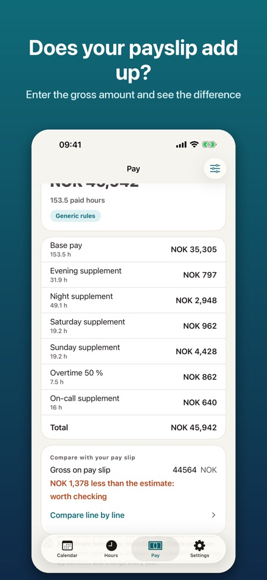
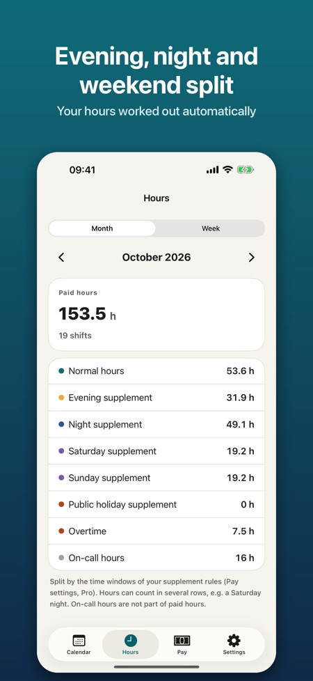

Plan your shifts, see your hours and check that your payslip adds up. Made for shift workers in Norway, Denmark and Finland.



For shift workers in Norway, Denmark and Finland, such as nurses, care workers, police, retail, hotels and restaurants, warehouses and students with part-time jobs.
Yes, rotations of 1 to 8 weeks, placed up to two years ahead.
Yes, hours per week and month for normal, evening, night, Saturday, Sunday, public holiday, overtime and on-call. Shifts past midnight and daylight-saving changes are counted correctly.
With Pro you get a monthly gross estimate with supplements you set up yourself. It is an estimate before tax, not a payslip.
No. Templates have the supplement names of common agreements, but you enter the numbers from your own agreement.
Pro is a yearly subscription or a one-time lifetime purchase.
English, Norwegian, Danish, Finnish and Swedish.
For shift workers in Norway, Denmark and Finland: nurses, care workers, police, retail, hotels and restaurants, warehouses and students with part-time jobs. Plan your shifts, see your hours and check that your payslip adds up.
CALENDAR AND ROTATION
• Your own shift types with colour, start and end time and unpaid break (day, evening, night, long day, on-call, off)
• Month and week view: pick a shift and tap the days to place it
• Rotations of 1–8 weeks, placed up to two years ahead
• Copy a week, swap shifts between two days, add notes and overtime
• Public holidays for Norway, Denmark and Finland are calculated in the app (including Easter, Ascension, Whitsun and Midsummer)
• Reminder before each shift
HOURS
• Hours per week and month: normal, evening, night, Saturday, Sunday, public holiday, overtime and on-call
• Shifts past midnight and daylight-saving changes are counted correctly
PRO
• Monthly gross pay estimate with a breakdown you can compare with your payslip
• Enter the gross amount from your payslip and see the difference to the estimate
• Hourly wage or monthly salary, and supplements you set up yourself: per hour or % of the hourly wage, with a time window and weekdays
• Overtime at 50 % and 100 %, per day or after a number of hours per shift
• Templates with the supplement names of common agreements (KS and Spekter in Norway, regions and municipalities in Denmark, Sote and KVTES in Finland). Rates are not included: you enter the numbers from your own agreement
• Export to Apple Calendar, as an .ics file or as an image
• Widget with your next shift and hours this month
Pro is available as a yearly subscription or as a one-time lifetime purchase. The yearly subscription renews automatically unless you cancel it in your Apple ID settings at least 24 hours before the end of the period.
No account, no ads. Everything is stored on your phone and works offline. The app is available in English, Norwegian, Danish, Finnish and Swedish.
Pay is an estimate before tax, not a payslip. The app is independent and not affiliated with any employer, trade union, employers' organisation or authority.